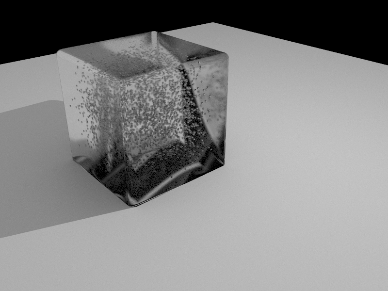
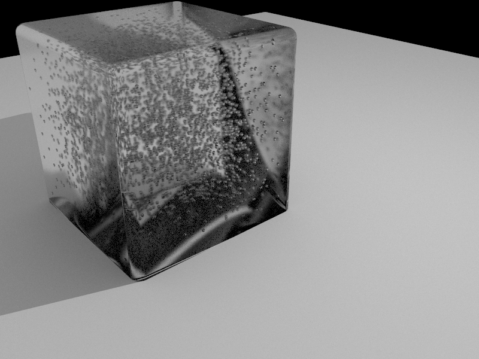
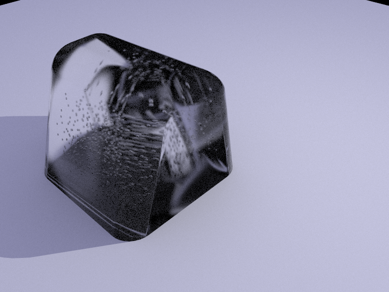
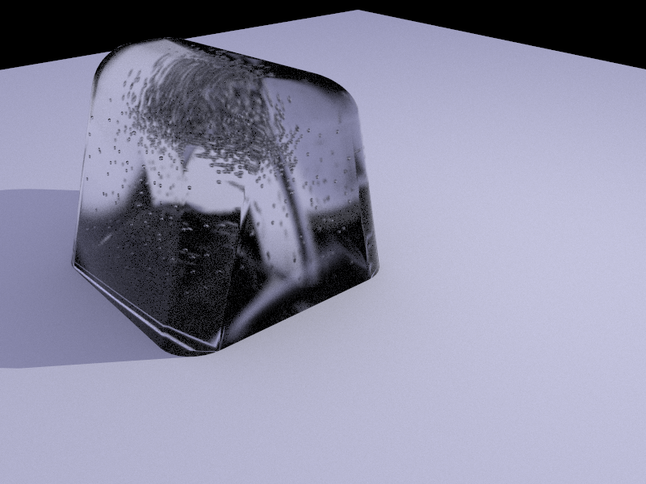
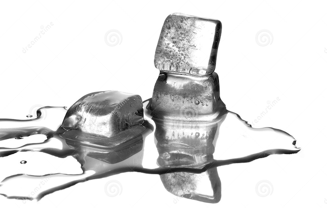
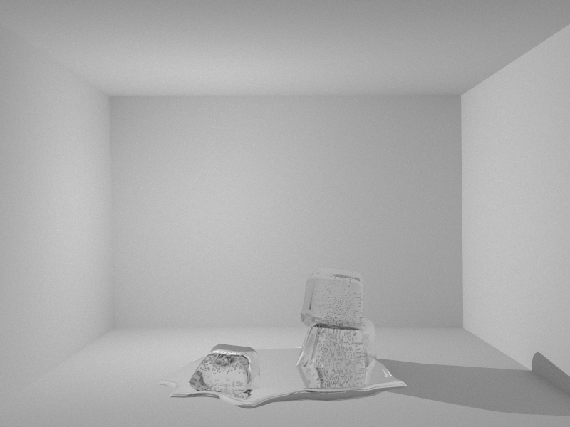
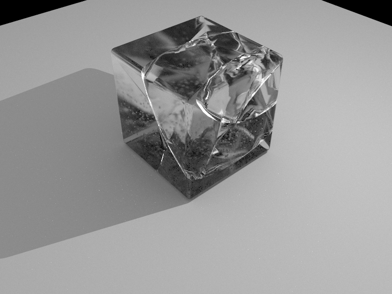
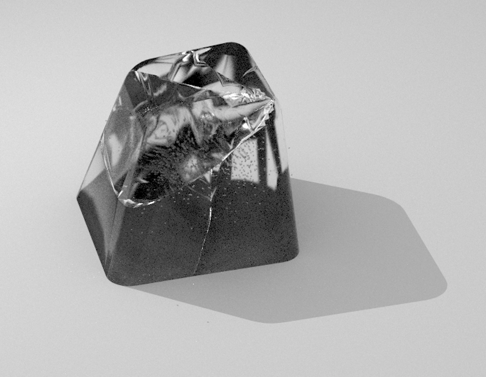

Amin Ghafari
|
realistic-rendering-ice.pdf |
Contact details: Computer Mechanics Laboratory Etcehverry Hall UC Berkeley, 94720 CA Email: amin[dot]ghafari[at]berkeley[dot]edu |
Realistic Rendering of Ice and Crack Propagations
Amin Ghafari Zeydabadi, Julian Park CS 284A, UC Berkeley
Ice rendering is a challenging subject in path tracing which requires special care to have decently rendered pictures. There has been some efforts in past projects to make this happen, and they were successful to get good results. However, the appearance of the surface of most of these ices is unrealistically clear and pristine. Here, a class called MicrofacetGlass is defined to perturb the normal surfaces at the hit point in order to blend the properties of a glass and a surface out of the rendering. Our random bubble generator which generates bubbles within range of specified radius inside the ice, along with physical fractures, makes our ice cubes look highly realistic.
Technical Approach
Despite all effort to get rendered ice close to natural ice, past outcomes were more close to glass, which is too specular. This immediately gave the impression that it is not actual ice. Also, most of the rendered ice samples were missing the white color that an ice has in its center, which again makes the pictures less appealing. Recent efforts has been successful to get the white part of the ice to some good level but the surface of the produced ice made it more like glass than ice, which has some diffuse property on the surface.
In this work, we render ice with realistic texture and structure. In addition to internal bubbles and subsurface scattering, this includes rendering of propagated ice inside the ice geometry and making an animation of a falling cube while it impacts a surface breaks to pieces from the previously generated crack and fracture piece of ice.
The first step toward getting a realistic ice is to get a surface to represent ice. Although displacement mapping (or bump mapping) is an option to get variation in the normal surfaces of the mesh, it requires a very fine mesh with thousands of triangle primitives which make the rendering process very slow. This computational power can be saved and used to render thousands of bubbles inside the ice cube. This will significantly help to get a more realistic ice than bump mapping. Hence, our solution to making a good surface representation of ice is a microfacet surface which represents a diffuse glass, named as MicrofacetGlass in our code.
Now that the ray is generated we should find how this ray is intersecting with a primitive. The most common one is triangle primitives that we discuss it here to how find the solution.
Starting with some ray tracing code, we introduce a new BSDF class called MicrofacetGlass which generates a new normal to the surface of the material when a ray hits it. This distribution is the same as for a microfacet material, called a Beckmann normal distribution function (NDF) which perturbs the normal slightly according to the value of alpha; this factor determines that the surface is more diffuse for larger values and more glassy for smaller values. Then, having this new normal and the direction of the ray we assume that the surface is a glass with refraction coefficient of ice to determine if a ray reflects or refracts from the surface of the ice. Since the normal is not in the z-direction of the local coordinate, we added a function to calculate the reflection and refraction direction of the ray for a general vector to the surface; these functions are called generalreflect() and generalrefract().
Furthermore, in order to have some white "clouds" inside the ice for a better rendering, we introduced a cloud of bubbles inside the ice using a random generation of bubble positions inside the ice using a normal distribution of the position -- the same idea utilized to generate the radius of the bubbles. Then, these numbers have been checked to see if they are in a valid range. Afterward, all of these generated bubbles and their positions are manually added to the DAE file of the ice. The algorithm of this code is not explained here for conciseness.
|

|

|
|

|

|
Combining these steps, we have successfully created a fairly realistic simulation of ice as shown in Fig3. The first ice cube is rendered when there is only one set of random distribution of bubbles in the middle, and the second one has two distributions where one of them is concentrated at the center with high concentration and the other spread across the whole domain. This helps to make the resultant rendered ice seem more realistic.
|

|

|
Crack generation
The next step was to generate cracks and fractures inside the ice cube to get an even better rendering result. Fig4a and Fig4b show some high-quality rendered ices with bubbles and cracks. The first idea behind this was to manipulate the generated mesh from the DAE inputs file by adding some extra features to the meshEdit files. However, we realized that this work can be easily done in Blender through fracture libraries that break any geometry into pieces. So instead of spending time coming up with our own fracture-generation function, we focused on how to manipulate and render such fractures more realistically. By applying physics-based forces to each broken piece, we obtained a dynamic animation of a falling cube and its explosion.
|

|

|
After crack generation, we found out that it is possible to manipulate the DAE files of ice to change the position of each piece of ice. So we created a MATLAB program explained in Algorithms 2 and 3 to update the position vector of each piece per time step. We use an initial text file which is a copy of a DAE file of an ice cube with all of its pieces in order to update position of each piece and generate a new DAE file corresponding to that position for rendering. We applied gravity in the Z direction and initial velocity downward until the point of collision at a time step when the center of mass of the cube is 1 unit above the surface. Afterwards, an upward velocity smaller than the impact velocity as well as a radial velocity is introduced in order to get the exploding animation for the pieces of ice. The integration and updated location of each piece is obtained using an explicit Euler method. Then these files are rendered to generate a dynamic GIF animation.
Fig4 shows a frame-by-frame sequence of a fractured ice cube falling downwards due to gravity and each piece exploding outwards after collision with the horizontal plane as intended in our MATLAB code.

|
Conclusion
In this project, we successfully rendered various geometries of ice by combining many of ice's unique material properties: glassy surface, internal bubbles, melting shapes, and sharp cracks. As seen in our results throughout this paper, such as in Fig. 4b, we can confidently say that our rendered ice possesses those properties in a highly realistic manner.
While creating multiple DAE files via Blender, then rendering them on our customized path tracer and our MicrofacetGlass class, then adding a normal distribution of bubbles and fractures, we resolved many challenges like finding the right probabilistic balance between refraction and reflection for our MicrofacetGlass class (by incorporating an alpha factor for realistic blurriness and transparency), or figuring out a way to make our bubble distributions look less artificial (by overlaying multiple random distributions). We tackled all our tasks, as described throughout our paper, with one goal in mind: make our ice rendering as realistic as possible. At a high level, we learned that even a seemingly obvious material like ice takes significant computational effort to accurately render on screen. We often take ice's physical structure and texture for granted in our daily lives, but alike many other natural materials, realistically rendering ice entailed many features to be engineered.